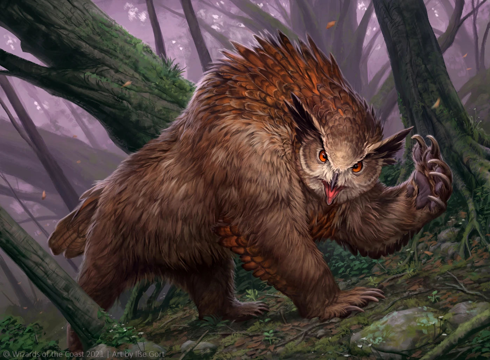

The fire of an owlbear matriach burns in your chests. Their instincs drive you in the hunt and help you channel your rage. When you let the fire take over, you grow wings between your arm and you legs grow stronger. Ready to pounce!
Whenever you are 10ft higher than an enemy, you may use your action to channel your owlbear spirit to make a jumping attack unto them, slamming them into the ground. Roll to attack, on a hit you deal
16 (3d10)
+ Strength + Profeciency bludgeoning damage. Your enemy must succeed on a strength check or fall prone. DC = 10 + strength + profeciency. You may use this ability a number of times equal to your profeciency bonus per long rest.